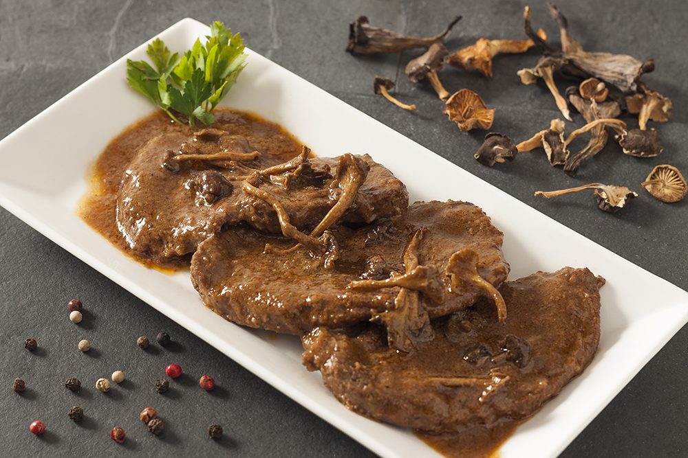

Fricandó, un plato típico de la gastronomía catalana
Historia de Vallgorguina
Vallgorguina, un pintoresco municipio de la comarca del Maresme, se encuentra en un entorno privilegiado entre las sierras del Montnegre y el Corredor, una zona montañosa rica en naturaleza e historia. Situado a unos 35 km de Barcelona, Vallgorguina combina la tranquilidad de su entorno natural con un notable patrimonio histórico. Su ubicación geográfica permite disfrutar de paisajes espectaculares, con bosques frondosos, montañas y una gran variedad de especies vegetales y animales. El municipio es conocido por su profunda conexión con la naturaleza y las tradiciones, además de un legado cultural que se refleja en sus edificios y monumentos históricos.
El pueblo de Vallgorguina conserva un aire tranquilo y auténtico, con calles que evocan la historia y el pasado rural. El entorno montañoso y los caminos ofrecen una sensación de regreso a la naturaleza, mientras que el casco antiguo, con construcciones que datan del siglo XVIII, conserva la esencia de la vida tradicional. Además, las leyendas que rodean lugares como el dolmen de la Pedra Gentil o la ermita de Santa Eulàlia de Tapioles, llenas de misterios y mitos, son una parte fundamental del atractivo turístico y cultural de la zona.
La gastronomía de Vallgorguina es una muestra de la cocina tradicional de montaña, con platos elaborados a partir de productos locales. Hierbas de montaña, carne de caza y quesos artesanales son solo algunas de las delicias que se pueden degustar en los restaurantes locales. Los visitantes pueden disfrutar de una cocina casera que destaca por los sabores auténticos y la utilización de productos frescos y naturales. Los platos tradicionales como el fricandó, cassola de tros o las carnes de caza son especialidades típicas de la región, perfectas para conocer el sabor de las tierras del Montnegre.
En el artículo que nos ocupa, vamos a hablar sobre el fricandó, este es el guiso catalán por excelencia. Tradicionalmente se elabora con ternera y setas aunque se ha ido modernizando y ha adoptado nuevas formas con ingredientes muy diversos. Sea como sea, una cocción muy lenta es la clave del éxito del plato, entre otros secretos que descubriremos en la receta que podrás encontrar a continuación.
Receta Fricandó
- Elaboración 90 minutos
- Típico de Otoño
- Fácil
- Para 6 personas
- 231Kcal/100g
- 3€/persona
Ingredientes:
- 500g de carne de guisar de ternera
- 1 manojo de perejil fresco
- 500ml de agua
- 3 tomates maduros
- 1 hoja de laurel
- 1 copa de vino blanco
- 1 cebolla grande
- 1 puñado de almendras tostadas
- Aceite de oliva virgen extra
- 1 paquete de setas
- Pimienta negra molida
- Harina de trigo
- 2 diente de ajo
- Sal
Pasos:
- Para comenzar, debemos poner en remojo las senderuelas en un recipiente con agua tibia. Este paso es muy importante si queremos preparar fricandó con setas de forma correcta. Después salpimentamos al gusto la carne y enharinamos. En una sartén con un chorrito de aceite de oliva, freímos los filetes vuelta y vuelta, reservando para usar más tarde.
- Para hacer el sofrito, cortamos la cebolla y la doramos a fuego lento, añadiendo los tomates pelados. Removemos bien y una vez esté confitado, añadimos la carne para que se mezclen los sabores. Incorporamos a la sartén la hoja de laurel y la copa de vino, dejando que reduzca. Una vez listo, sacamos las setas del agua y las añadimos también echando un poco de sal al gusto.
- Mientras dejamos a fuego lento el fricandó durante hora y media, hacemos la picada. Para ello, trituramos el ajo, las almendras tostadas y el perejil, añadiendo un poco de agua de cocción con la ayuda de una picadora o thermomix. Lo añadimos al guiso y dejamos que termine de cocer.
- A la hora de servirlo, es mejor que dejemos que el plato repose al menos unas horas para que tenga aún más sabor. De hecho, la receta fricandó de la abuela indica que se haga el día antes. por lo que podemos aprovechar y cocinar otros entrantes para el menú como unos champiñones rellenos o un delicioso carpaccio de ternera.